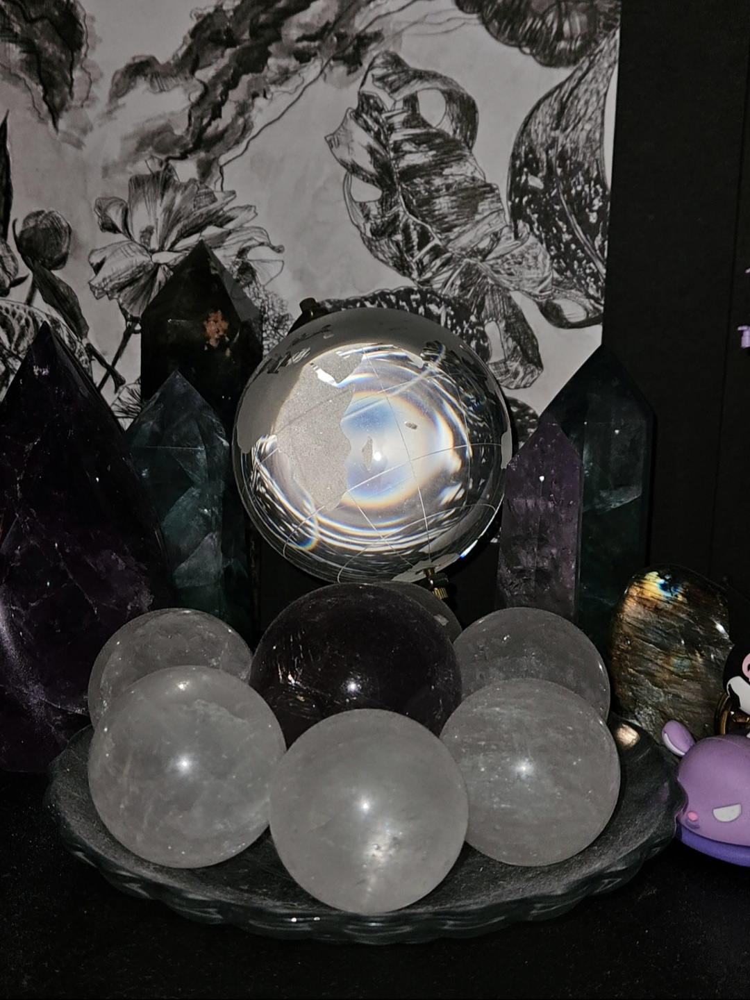
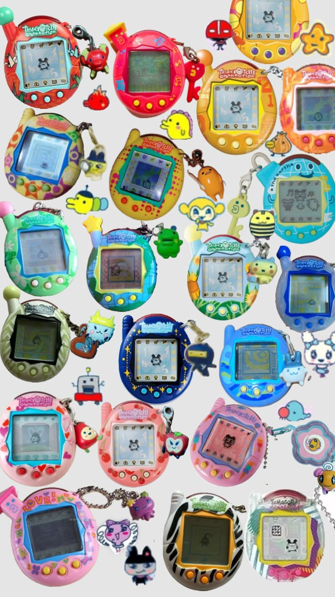
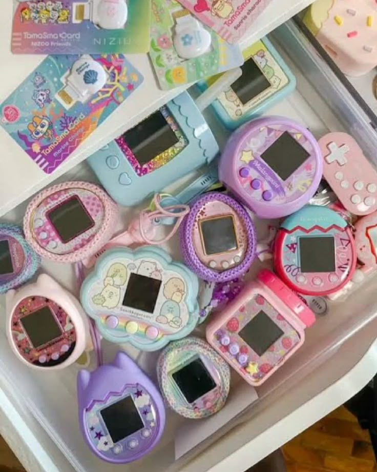
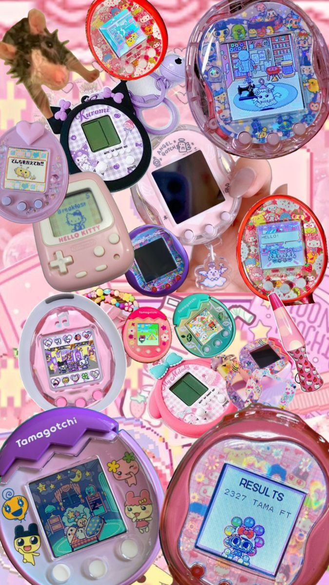
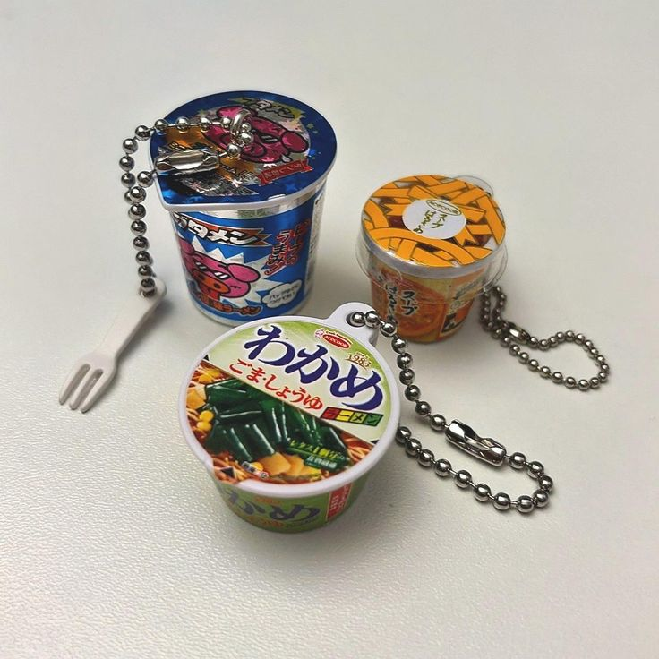
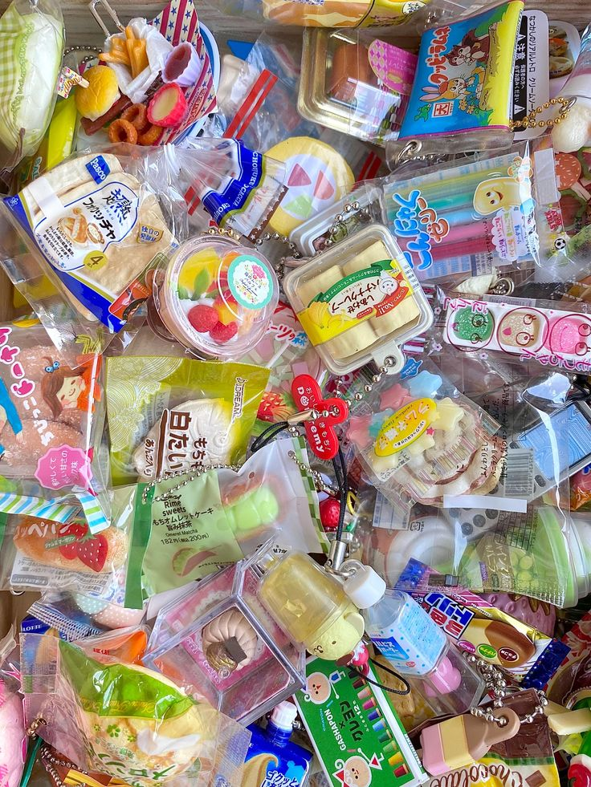
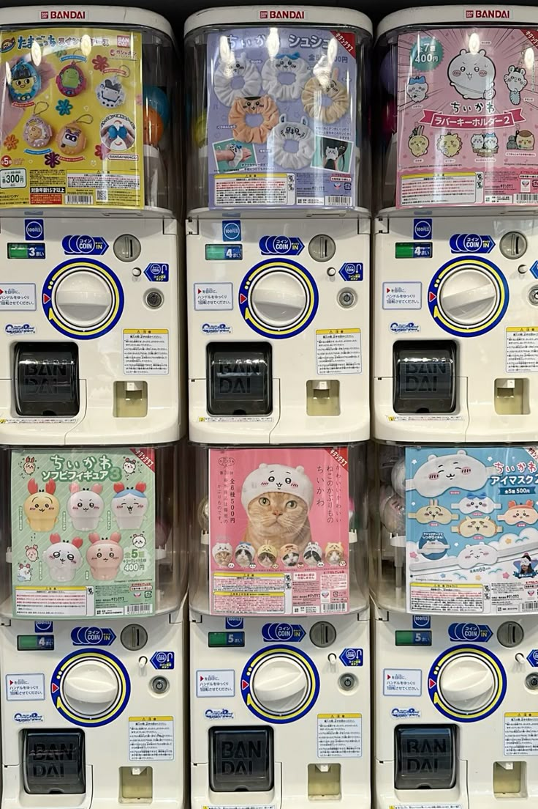

Trinkets are wonderful for building a collection. While the theme here is to collect and accessorize, many trinkets can serve multiple purposes. Not many people know that I have a crystal collection, and I like to display some of my figures alongside it. I find that this arrangement brightens up my apartment and adds a playful, fun touch to my room.
In the following sections, we’ll dive into different categories of trinkets that can elevate your bag charms, accessories, or even home displays. From the playful and decorative art of Decoden, to collectible figures, unique handmade items, charming jewelry, soft squishy delights, and digital or miniature treasures — there’s a world of fun to explore.

───୨ৎTamagotchi (Digital Pets)─
Tamagotchi (たまごっち) is a handheld digital pet created by Bandai in 1996, originally designed as a tiny companion you take everywhere. The name comes from tamago (egg) and watchi (like “watch”), highlighting how portable and personal it is. These virtual pets became a worldwide phenomenon — part toy, part friend, part responsibility — and have stayed iconic for almost 30 years.
Each device contains a digital character that “hatches” and evolves based on how well you care for it. Feeding, cleaning, games, happiness, discipline — all of these influence the growth path. Versions range from the nostalgic 90s originals to modern color-screen models with jobs, school life, and multiplayer features.
Collectors enjoy chasing rare shells, special releases, character guides, and accessories like cases or charms. Whether you’re raising your first Tamagotchi or maintaining a full collection, they’re comforting, cute, and full of charm.



───୨ৎGashapon / Gachapon─
“Gashapon” (ガシャポン / ガチャポン) refers to Japanese capsule toy machines known for their surprisingly high-quality miniatures. The name comes from sound effects — gasha/gacha (turning the crank) and pon (the capsule dropping). Unlike Western vending toys, Gashapon items are detailed, collectible, and often part of beautifully themed series.
Popular sets include animals doing silly things, miniature furniture, small appliances, anime figures, fashion charms, and photogenic props. They’re affordable, fun to collect, and perfect for displays or desk décor. The mystery element — not knowing which one you’ll get — makes them even more exciting.
Collectors love completing full sets, trading duplicates, and building tiny shelf displays. They’re a staple of kawaii culture and miniature hobbies, adding a spark of surprise and joy to any trinket collection.


